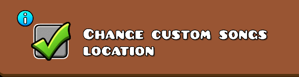

Q. GDPS가 뭔가요?
> A. Geometry Dash Private Server의 약자로, 간단히 말해 GD 사설 서버입니다. 서버(데이터)가 아예 분리되어 따로 존재합니다.
Q. 모바일에서 설치하려면 기존 지메 지워야 하나요?
> A. 아니요. RedLime GDPS는 기존 지메와 앱과 데이터가 분리되어 걱정없이 다운로드 받으실 수 있습니다.
Q. 계정 로그인이 안돼요.
> A. 계정 가입 하셨나요? 이 서버는 본 GD 서버 계정과 연동되지 않아서, 새로 만드셔야합니다.
Q. 계정 가입을 했는데 이메일 인증이 필요한가요?
> A. 별도의 인증이 필요 없습니다. 바로 로그인 하시면 됩니다.
Q. PC버전에서 아무런 소리가 안들려요.
> A. GDPS 폴더의 경로중에 한글이 포함되어 있다면 문제가 발생합니다. C드라이브로 폴더를 옮겨보세요.
Q. 아무런 소리가 안들리는건 해결했지만, 커스텀 노래가 안들려요
> A. 아래 옵션을 켜신후 재부팅 후 노래를 다시 다운로드하세요.

Q. 제 본섭 레벨을 가져오려면 어떻게 해야 하나요?
> A. PC버전 한정으로만 가능합니다. (영상링크)